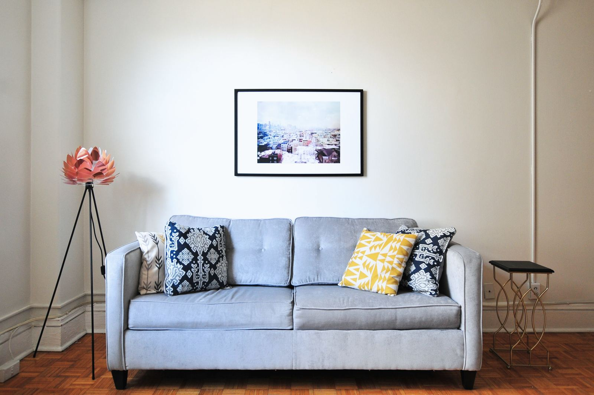
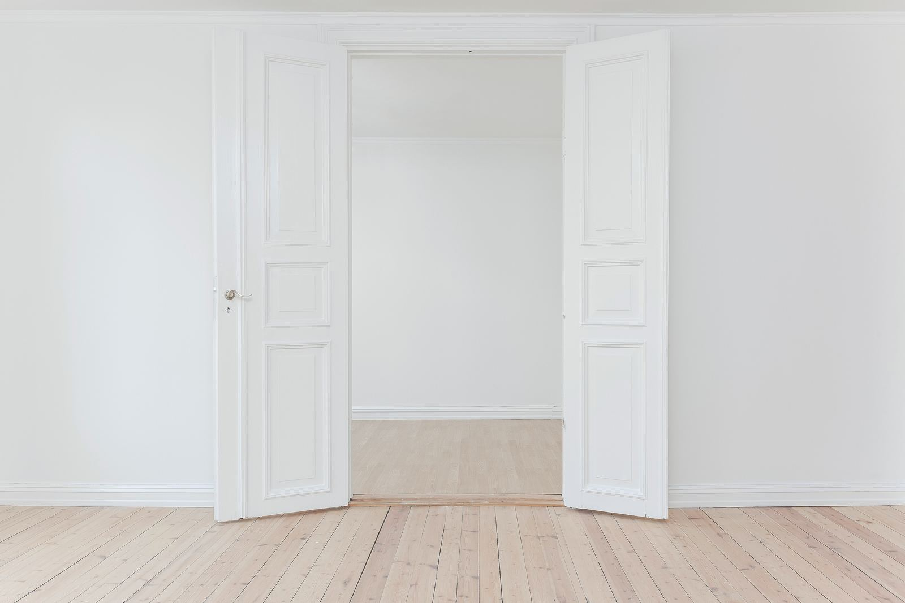
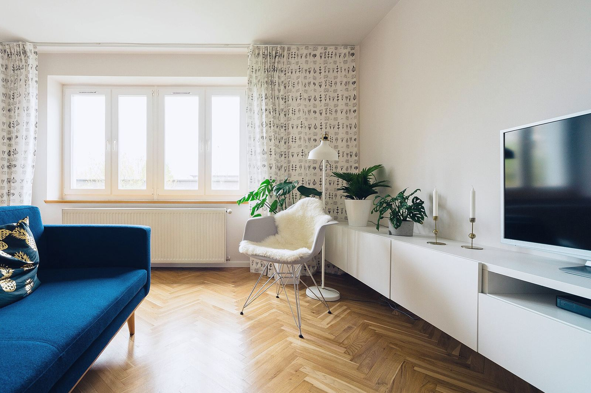
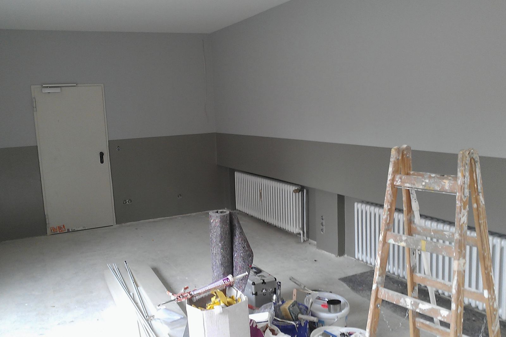
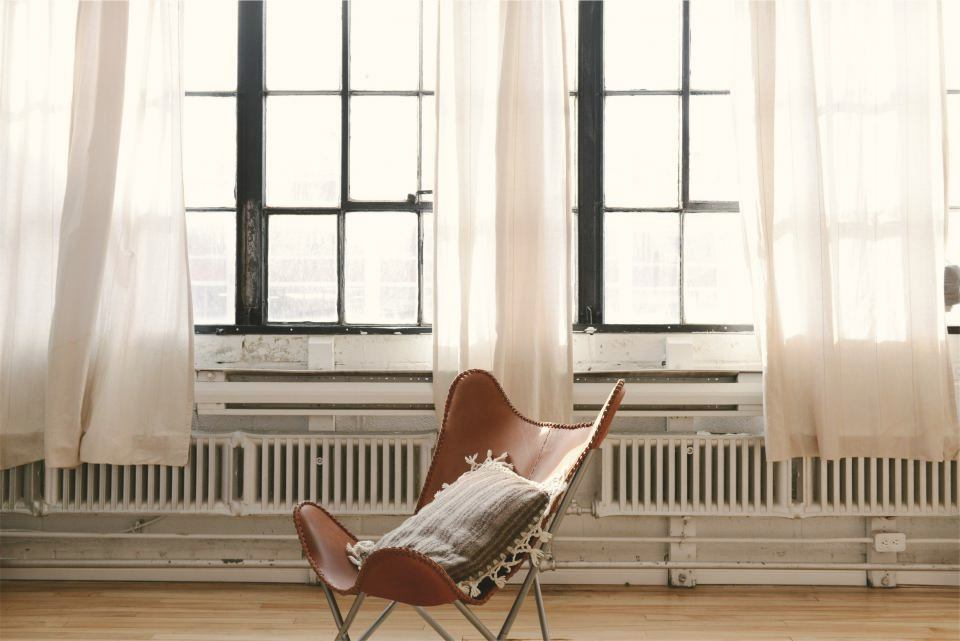
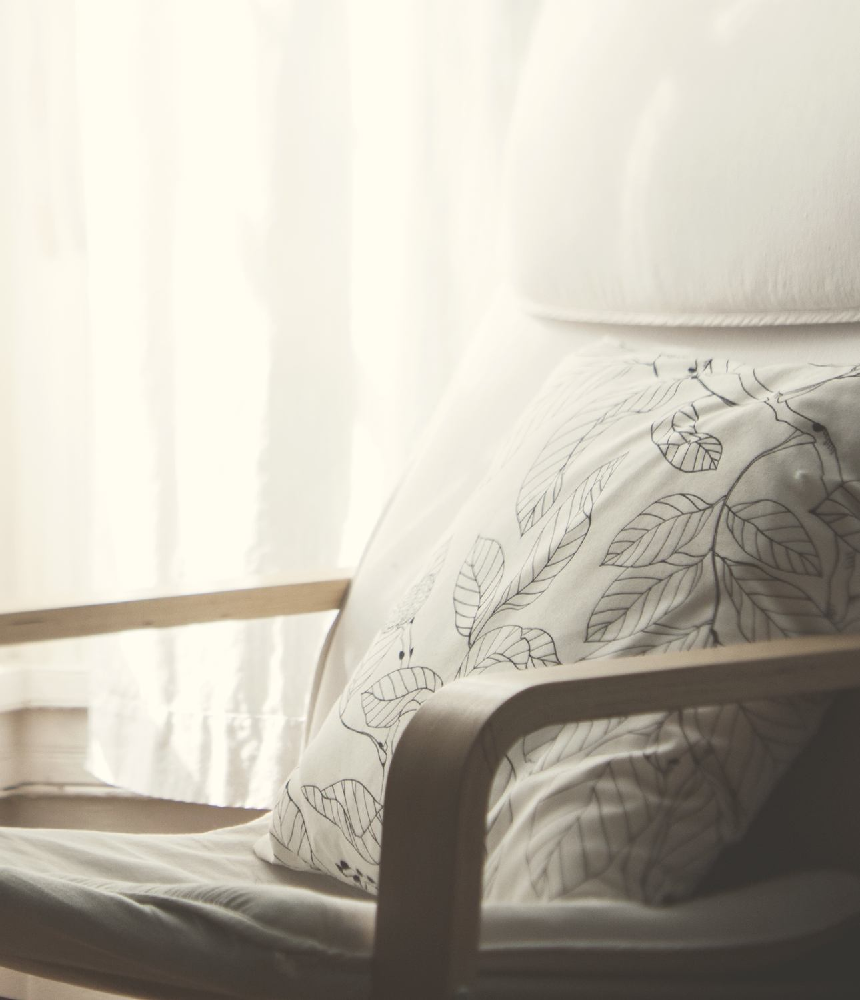
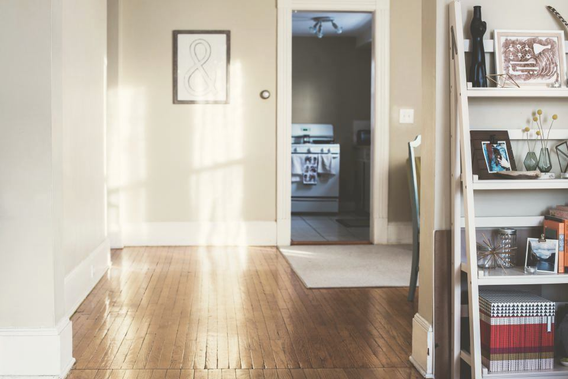
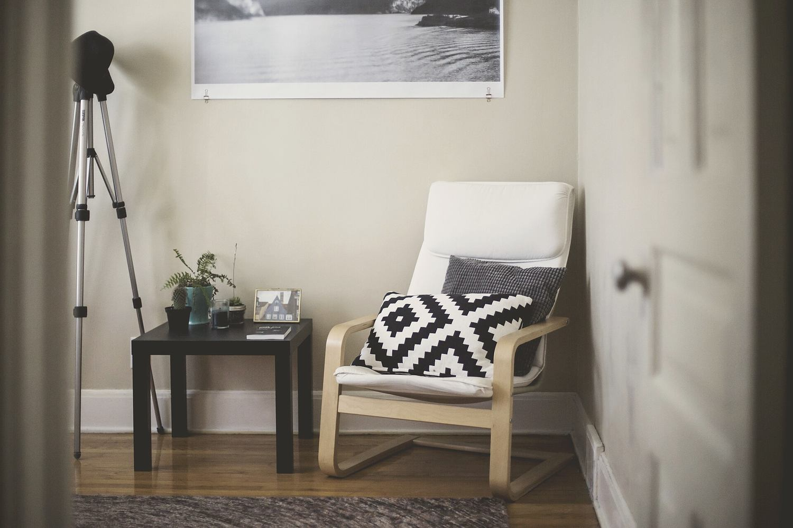

Port Arthur, Turku · 2025
Koti Port Arthur
Kolmio 1930-luvun kerrostalossa. Ikkunat ja patterit jäivät paikoilleen, joten sijoitin huonekalut niiden mukaan.


Lähtökohta
Asunto on 78 neliön kolmio kolmannessa kerroksessa. Talo valmistui 1934, ja asukkaina on pariskunta ja kaksi lasta. Ensimmäisellä käynnillä lapset näyttivät minulle, mihin kohtaan lattiaa junarata aina rakennetaan.
Ikkunat ovat talon alkuperäisiä, ja taloyhtiö uusii ne vasta 2028. Siksi ikkunoihin, valurautapattereihin ja ulkoseiniin ei saanut koskea. Samaan huoneeseen piti mahtua ruokapöytä, lasten leikkipaikka ja toisen vanhemman etätyöpiste.
Ratkaisu
Purimme keittiön ja olohuoneen välisen kevyen väliseinän, jolloin ikkunaseinä jäi yhden huoneen käyttöön. Ruokapöytä siirtyi ikkunan viereen, ja patterin edessä on vain matala penkki. Junaradalle jäi 2,4 metriä lattiaa sohvan ja penkin väliin.
Parkettilattia hiottiin ja öljyttiin. Seinät maalattiin kalkkimaalilla, koska se päästää kosteuden läpi ja kestää vanhalla rappauksella paremmin kuin muovimaali. Verhot ommeltiin ohuesta pellavasta ikkunoiden leveyden mukaan.
Suunnittelu kesti kymmenen viikkoa ja remontti kolme kuukautta.
Pinnat
- Kalkkimaali, seinät
- Parketti, hiottu ja öljytty
- Pellava, verhot
Ennen ja jälkeen
Ikkunaseinä
Remontin aikana huoneessa oli betonilattia, tikkaat ja kaksi patteria, joita ei saanut siirtää. Valmiissa huoneessa pattereiden eteen ei tullut mitään korkeaa, ja matala taso kulkee ikkunaseinän vierestä koko huoneen pituudelta.






Oma kohde
Kerro, mitä kodissasi ei saa muuttaa.
Lähetä osoite, huoneet ja toivottu aikataulu. Ehdotamme käyntiaikaa kahden arkipäivän kuluessa.
Ota yhteyttä